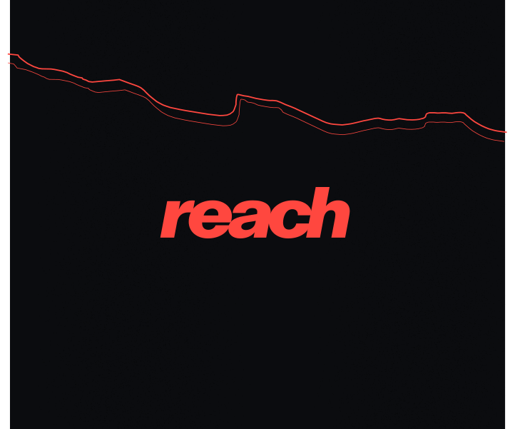
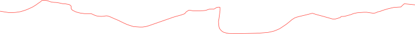
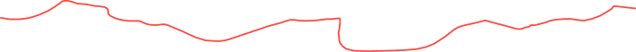
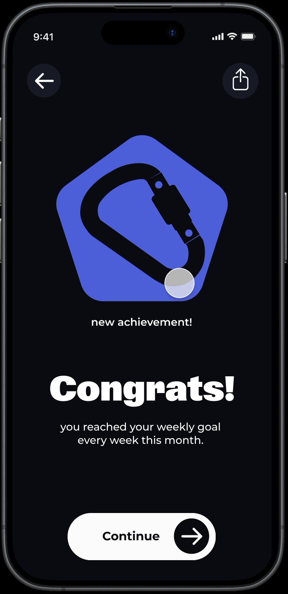
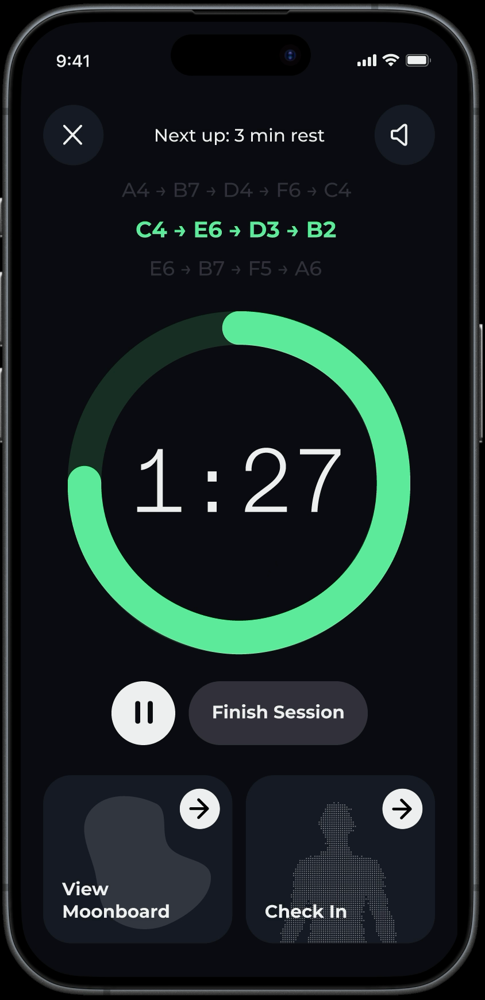
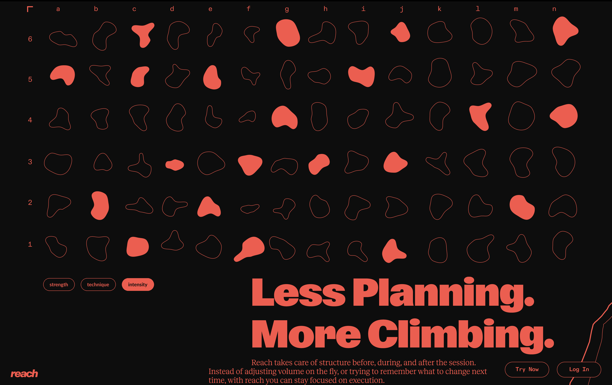

Reach App for Climbers
A climbing app for intermediate climbers that logs training sessions, pain, and builds you personalized workouts.
Course: Startup! Intro to ux/ui and Product Design, Third-year (2026) Mentor(s): Ben Lev, Ofir Gurevich
In collaboration with: Or Sinalevich
Bouldering has no established training methods. Climbers often plateau, get injured, or don’t know how to fit tools like the MoonBoard to progress.
Mid-session, hands are chalky and the phone sits aside, so we knew that during sessions, the flow needs a minimal amount of intervention from the user. We solved it with one-tap logging, voice guidance and a smart watch extension version.
Our goal was to make Reach feel like a personal trainer who understands and feels the users.
Graphic Language & Direction
Our brand-values were instinctive, responsive, grounded, minimal and calculated.
A material direction felt like fashion, so we moved to a minimal, calculated data language: typography, one color, vector holds, red on black.
Each route becomes a shareable abstraction.







Next Project →